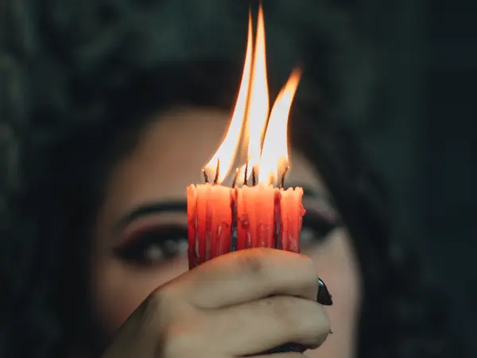
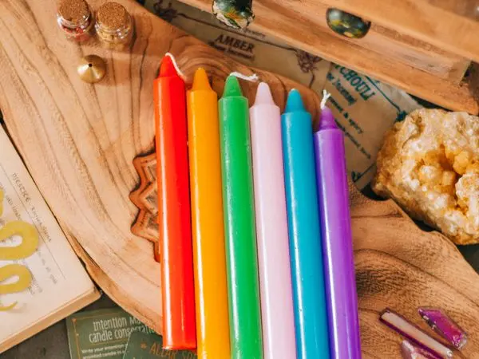
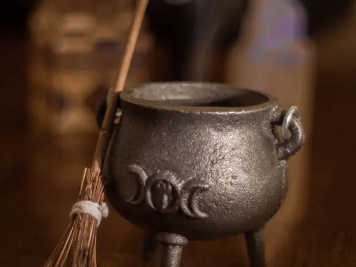
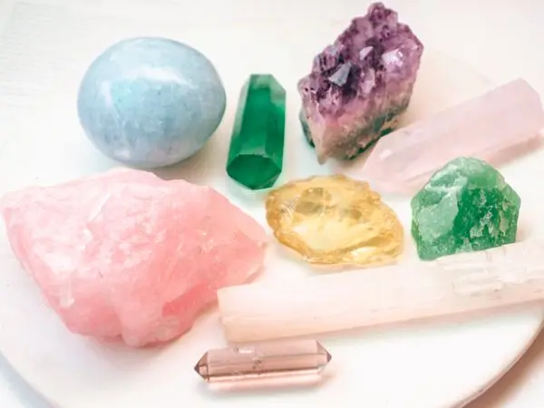
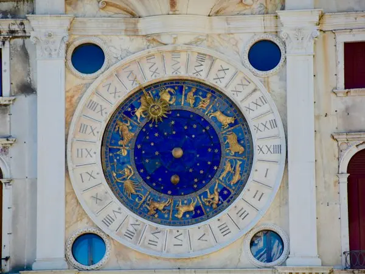
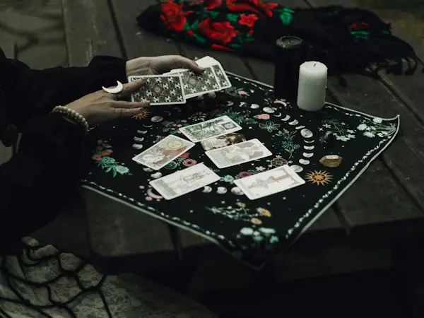
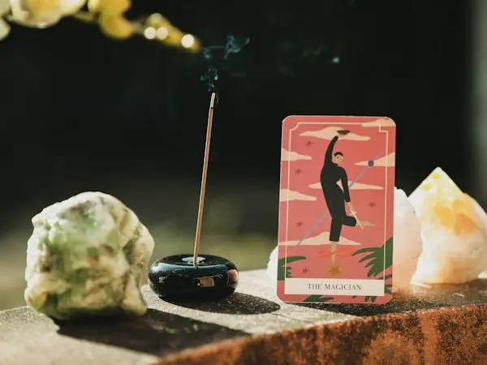
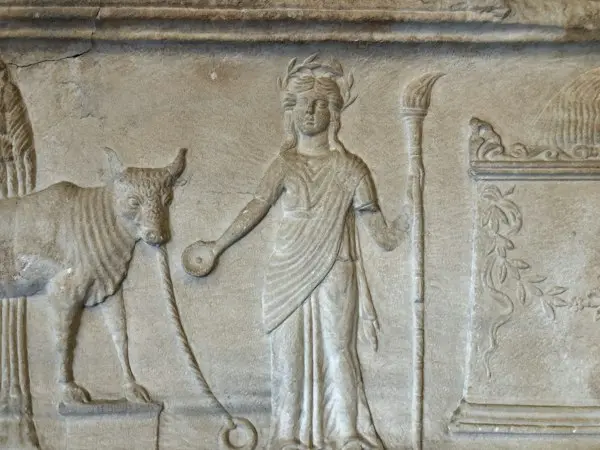
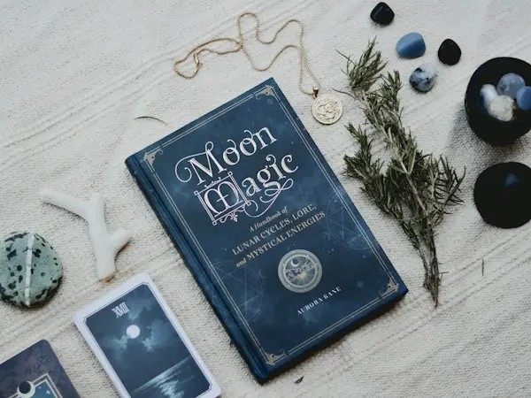

No posts containing those keywords exist at the moment.

What Is Baneful Magick? Hexes, Curses, Bindings, and the Ethics of Protecting Yourself
Hexes, curses, bindings, and banishing: what each one means, how witches think about the ethics, and what to ask before you ever work it.
Read More: What Is Baneful Magick? Hexes, Curses, Bindings, and the Ethics of Protecting Yourself

Candle Magick for Beginners: Colors, Anointing, Fire Safety, and Reading the Flame
Candle magick is one of the simplest ways to start casting. Learn candle color meanings, how to anoint a candle, fire safety, and how to read the flame and wax.
Read More: Candle Magick for Beginners: Colors, Anointing, Fire Safety, and Reading the Flame

Can You Be a Witch Without Being Wiccan?
Wicca is a religion. Witchcraft is a practice. Learn the difference, where the Threefold Law comes from, and how to find your own path as a witch.
Read More: Can You Be a Witch Without Being Wiccan?
How to Celebrate Samhain: Rituals, Divination, and Ancestor Work for the Witch's New Year
Samhain is the witch's new year, when the veil grows thin. Learn its history, when to celebrate, and simple rituals for honoring your ancestors.
Read More: How to Celebrate Samhain: Rituals, Divination, and Ancestor Work for the Witch's New Year

Crystals for Beginner Witches: Which Stones to Start with and How to Care for Them
Amethyst, citrine, clear quartz, and five more starter stones, plus how to cleanse, charge, and spot fakes before they end up on your altar.
Read More: Crystals for Beginner Witches: Which Stones to Start With and How to Care for Them
Runes for Beginners: How to Read the Elder Futhark with Respect
Rune doesn't mean letter. It means secret. A grounded introduction to the Elder Futhark, from Odin's ordeal to your first three-rune spread.
Read More: Runes for Beginners: How to Read the Elder Futhark With Respect
Herbalism for Witches: How to Work with Plants Safely and Powerfully
Rose petals for romance, bay leaves for luck. Plant magick is everywhere, and working with it safely starts with knowing your herbs.
Read More: Herbalism for Witches: How to Work With Plants Safely and Powerfully

Astrology for Witches: How to Time Your Spells by the Moon and Planets
You don't need a birth chart to time a spell. The seven planets, moon phases, and moon signs, and how to layer them without obsessing.
Read More: Astrology for Witches: How to Time Your Spells by the Moon and Planets

Divination for Beginners: How to Read Cards, Runes, and the Signs Around You
Tarot is one tool in a much bigger box. Signs, runes, pendulums, scrying, and more, with a simple way to find the method that fits you.
Read More: Divination for Beginners: How to Read Cards, Runes, and the Signs Around You
The Law of Similars: Why “Like Affects Like” Powers Almost Every Spell
Why red for love and green for money? Meet the Law of Similars, the principle behind nearly every spell, and start reading your tools like a witch.
Read More: The Law of Similars: Why “Like Affects Like” Powers Almost Every Spell

Ten Years a Witch: What I’ve Unlearned and What I’d Tell My Beginner Self
Over ten years of practice, a lot has shifted. What I've unlearned, what I trust now, and what I'd tell my beginner self if I could.
Read More: Ten Years a Witch: What I’ve Unlearned and What I’d Tell My Beginner Self
The Spell Is Cast, Now What? A Guide to Disposing of Wax, Herbs, and Jars
The candle burned out. Now what? Burying, burning, crossroads, running water, and the trash can, matched to the working they came from.
Read More: The Spell Is Cast, Now What? A Guide to Disposing of Wax, Herbs, and Jars

Ancestor Work for Beginners: How to Honor Your Lineage, Known or Unknown
Your ancestors are the closest spirits you have. A simple altar, the right offerings, and a real relationship, even without a family tree.
Read More: Ancestor Work for Beginners: How to Honor Your Lineage, Known or Unknown
Working with the Greek Gods: Kharis, Offerings, and Building a Real Relationship
Kharis is the heart of Hellenic worship: a relationship built on gifts, gratitude, and showing up. Meet the Olympians and start the right way.
Read More: Working With the Greek Gods: Kharis, Offerings, and Building a Real Relationship

Deity Work for Beginners: How to Approach the Gods with Respect
"Which deity is calling me?" is usually the wrong first question. Approaching gods with patience, research, and respect, and what silence can mean.
Read More: Deity Work for Beginners: How to Approach the Gods With Respect

What a New Witch Needs: Essential Tools and Your First Altar
Forget the Pinterest altar. The handful of tools a new witch uses most, and how to set up a working altar in a whole room or a shoebox.
Read More: What a New Witch Needs: Essential Tools and Your First Altar

Research Is a Magickal Skill: How to Find Your Own Answers in the Craft
Every book gives a different answer, and so does every website. Research is how a witch cuts through the noise, and anyone can build the skill.
Read More: Research Is a Magickal Skill: How to Find Your Own Answers in the Craft
How to Spot Witchcraft Misinformation and Find Sources You Can Trust
Black tourmaline protects, or it's dangerous, or it needs a full moon first. Sorting real knowledge from confident guesswork, one red flag at a time.
Read More: How to Spot Witchcraft Misinformation and Find Sources You Can Trust

What to Put in Your Grimoire: A Look Inside Mine
A grimoire and a Book of Shadows aren't the same thing. A tour of the sections inside The Magick Manuscript, and how to decide what goes in yours.
Read More: What to Put in Your Grimoire: A Look Inside Mine

Protection Magick for Beginners: Shields, Wards, and Banishing That Hold
Before you manifest anything, protect what you have. Shields, wards, banishing, and the small daily habits that make a protection practice hold.
Read More: Protection Magick for Beginners: Shields, Wards, and Banishing That Hold
Why Focus Is a Witch's Most Underrated Tool: Meditation for Beginners
Meditation doesn't mean an empty mind. Five minutes of breath, a little time outside, and simple grounding can change how your spellwork feels.
Read More: Why Focus Is a Witch's Most Underrated Tool: Meditation for Beginners

Your First Tarot Deck: How to Choose, Cleanse, and Start Reading
You don't have to be gifted your first deck. Choosing one, cleansing and bonding with it, and interviewing it before your first real reading.
Read More: Your First Tarot Deck: How to Choose, Cleanse, and Start Reading

What Is a Correspondence? The Concept That Holds All Spellwork Together
Black tourmaline for protection, Friday for love. A correspondence is energy shared between things, and it's the idea that holds spellwork together.
Read More: What Is a Correspondence? The Concept That Holds All Spellwork Together

Shadow Work for Witches: What It Is and How to Begin Gently
You can't know anything else until you know yourself. Where shadow work comes from, how it shows up in your craft, and how to start gently.
Read More: Shadow Work for Witches: What It Is and How to Begin Gently

How a Spell Works: Candles, Jars, Sachets, and Sigils Explained
Candles, jars, sachets, and sigils each do something different. How to build each one, and why every spell starts with a clear intention.
Read More: How a Spell Works: Candles, Jars, Sachets, and Sigils Explained

The Witchcraft Books That Built My Grimoire: A Beginner's Reading List
Some witchcraft books are excellent and some just have nice covers. A beginner reading list by topic, drawn from the shelf that built the Manuscript.
Read More: The Witchcraft Books That Built My Grimoire: A Beginner's Reading List